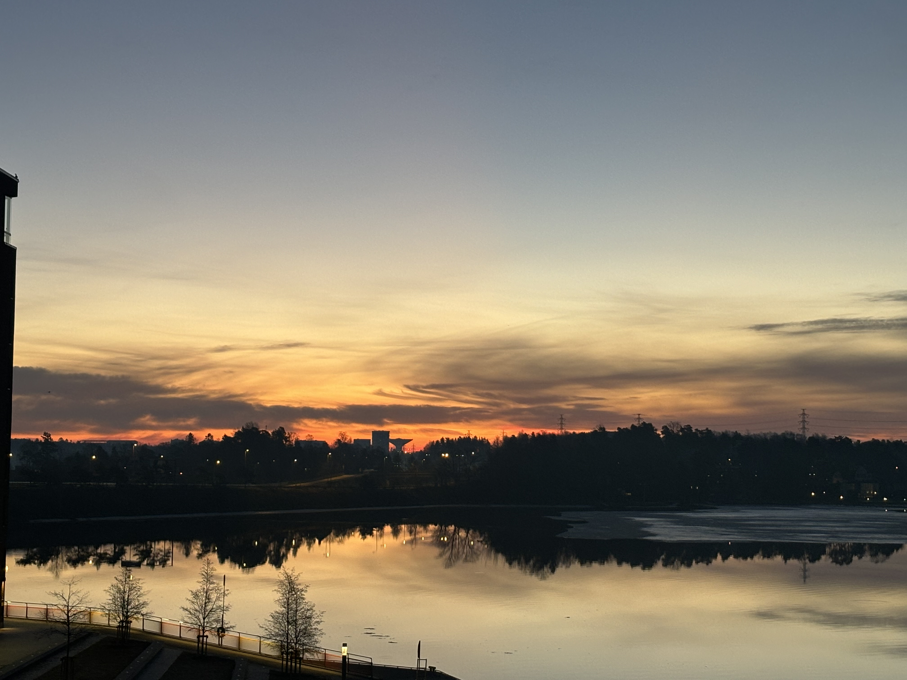

Mistä minut löytää?
Minut yleensä löytää työpöytäni äärestä opiskelemassa. Tai sitten keittiönpöydän yllä läppäriä tuijottamassa. Jokatapauksessa arkisin koneella.
Minut voi myös löytää salilta tai kävelyllä. Voin vapaalla myös ilmstyä ystävieni kanssa teatteriin, taidenäyttelyyn, elokuviin tai vaikka musabingoon.

Kesäisin minut tavoittaa parvekkeelta tai jostain meren rannasta istukelemasta. Saattaa olla, että sitä myös joskus terassille eksyy.